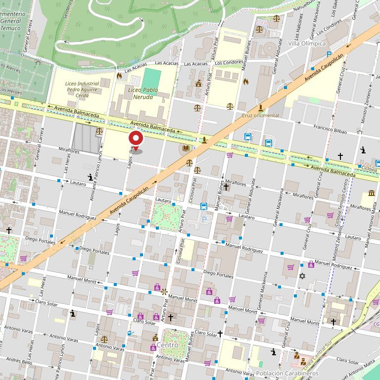

Temuco · Lagos 91
Todo queda por escrito.
Taller de servicio automotriz en Temuco. Cada auto entra con una orden de trabajo: qué se revisó, qué se cambió y qué falta.
3,9 con 215 reseñas en Google — y contestamos todas
Foto 1 El taller trabajando: un auto en el elevador, la bahía con luz · a sangre por la derecha y por abajo · mín. 1400 × 1500 px
Lo que nadie publica
Si algo sale mal, esto es lo que pasa
En un taller a veces el trabajo no queda bien a la primera. Lo que importa es qué se hace después. Acá está escrito, paso a paso, para que no dependa de con quién le toque hablar.
Los plazos de esta tabla son de ejemplo. Hay que reemplazarlos por los que JCB realmente maneja.
| Paso | Qué hace usted | Qué hacemos nosotros | Plazo |
|---|---|---|---|
| 1 | Nos avisa con la orden de trabajo en la mano — el número basta. | Buscamos la orden y vemos quién hizo el trabajo y con qué repuesto. | El mismo día |
| 2 | Trae el auto para que lo veamos. No hay que dejarlo. | Lo revisa el jefe de taller, no el mismo mecánico. Segunda opinión de la casa. | Dentro de 48 h |
| 3 | Escucha el diagnóstico y decide. | Le decimos con claridad si fue error nuestro, si es otra falla o si es desgaste. | En la misma revisión |
| 4 | Nada: nos deja el auto. | Si fue error nuestro, se rehace sin costo, mano de obra incluida. | Según repuesto |
| 5 | Si igual no queda conforme, escribe la reseña. | La contestamos con nombre y con lo que pasó, como hacemos con las 215 que ya hay. | Dentro de la semana |
El número de la orden de trabajo es lo que hace posible todo esto: sin ese papel, un reclamo es la palabra de uno contra la del otro. Guárdelo hasta que el auto ande bien.
Sin maquillar
Los números, tal como están
-
3,9
La calificación
No es un cinco y no lo vamos a disfrazar. Es el promedio de doce años de autos, de trabajos buenos y de algunos que hubo que rehacer.
Los doce años son de ejemplo
-
215
Las reseñas
Un taller chico junta veinte. Doscientas quince significa que por acá pasa mucho auto, y que la gente vuelve a contar cómo le fue.
-
Las contestamos todas
Las buenas y las malas. Con nombre y con lo que pasó. Eso es verificable ahora mismo: entre a la ficha de Google y mire las respuestas.
Foto 2 La bahía completa con varios autos · se desplaza al scroll · mín. 1600 × 1100 px
Cómo trabajamos
Nada se toca
sin avisar antes.
Si al desarmar aparece algo que no estaba en el presupuesto, se llama y se pregunta. El auto no avanza hasta que usted diga que sí.
Ver qué hacemosQué hacemos
Servicio de taller
Mantención y reparación de vehículos livianos. Todo con orden de trabajo y presupuesto antes de empezar.
-
Mantención periódica
Aceite, filtros, bujías y las revisiones que corresponden al kilometraje.
Según la pauta de la marca
-
Frenos
Pastillas, discos, tambores y el líquido. Se mide el espesor y se le muestra la medida.
Consultar marcas disponibles
-
Suspensión y dirección
Amortiguadores, bujes, rótulas, terminales. Lo que hace que el auto suene y se vaya de lado.
-
Diagnóstico con scanner
Para la luz del motor encendida. Se lee el código, se interpreta y se le explica qué significa.
Consultar valor del diagnóstico
-
Embrague y caja
Cambio de kit de embrague y revisión de caja manual.
Consultar plazo
-
Revisión antes de comprar
¿Va a comprar un auto usado? Tráigalo antes. Se revisa y se le entrega el informe por escrito.
Consultar valor
El listado es un ejemplo de estructura: se ajusta a lo que JCB realmente hace.
El papel
Cómo funciona la orden de trabajo
Es el documento que hace que después nadie discuta. Se llena adelante suyo y se le entrega una copia.
-
Entra el auto
Se anota el kilometraje, lo que usted viene a resolver y lo que se ve a simple vista.
-
Se revisa y se presupuesta
El presupuesto se avisa antes de tocar nada, y si al desarmar aparece otra cosa, se vuelve a llamar.
-
Se entrega con la copia
Qué se hizo, qué repuesto se puso y qué quedó pendiente. Ese número es el que sirve para reclamar.
Foto 3 Manos entregando las llaves con el papel, o mostrando la pieza cambiada · se desplaza al scroll · mín. 1600 × 900 px
Guarde la copia.
No es burocracia: es lo único que convierte un reclamo en un trámite de dos minutos en vez de una discusión.
Dónde estamos
Lagos 91, Temuco
Con estacionamiento para dejar el auto.
- Dirección
- Lagos 91, Temuco
- Teléfono
- (45) 240 3999
- Horario
- Lun a vie 8:30–18:30 · Sáb 9:00–13:00
- 3,9 con 215 reseñas
Foto 4 La entrada del taller desde la calle, con el letrero · vertical · mín. 900 × 1200 px

¿Le está sonando algo?
Tráigalo y lo revisamos. Sale con la orden de trabajo en la mano y sabiendo qué tiene, aunque decida no arreglarlo acá.
Llamar a JCB (45) 240 3999